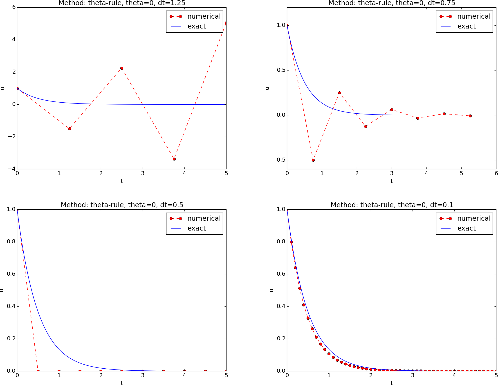
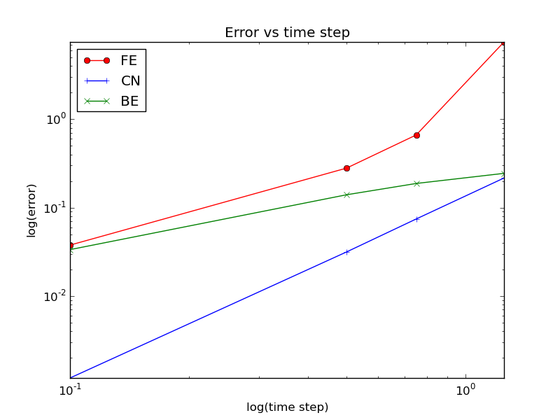

Summary. This report investigates the accuracy of three finite difference schemes for the ordinary differential equation \( u'=-au \) with the aid of numerical experiments. Numerical artifacts are in particular demonstrated.
Mathematical problem
Numerical solution method
Implementation
Numerical experiments
The Backward Euler method
The Crank-Nicolson method
The Forward Euler method
Error vs \( \Delta t \)
Bibliography
We address the initial-value problem $$ \begin{align} u'(t) &= -au(t), \quad t \in (0,T], \label{ode}\\ u(0) &= I, \label{initial:value} \end{align} $$ where \( a \), \( I \), and \( T \) are prescribed parameters, and \( u(t) \) is the unknown function to be estimated. This mathematical model is relevant for physical phenomena featuring exponential decay in time, e.g., vertical pressure variation in the atmosphere, cooling of an object, and radioactive decay.
We introduce a mesh in time with points \( 0 = t_0 < t_1 \cdots < t_{N_t}=T \). For simplicity, we assume constant spacing \( \Delta t \) between the mesh points: \( \Delta t = t_{n}-t_{n-1} \), \( n=1,\ldots,N_t \). Let \( u^n \) be the numerical approximation to the exact solution at \( t_n \).
The \( \theta \)-rule [1] is used to solve \eqref{ode} numerically: $$ u^{n+1} = \frac{1 - (1-\theta) a\Delta t}{1 + \theta a\Delta t}u^n, $$ for \( n=0,1,\ldots,N_t-1 \). This scheme corresponds to
The numerical method is implemented in a Python function
[2] solver (found in the model module):
def solver(I, a, T, dt, theta):
"""Solve u'=-a*u, u(0)=I, for t in (0,T] with steps of dt."""
dt = float(dt) # avoid integer division
Nt = int(round(T/dt)) # no of time intervals
T = Nt*dt # adjust T to fit time step dt
u = zeros(Nt+1) # array of u[n] values
t = linspace(0, T, Nt+1) # time mesh
u[0] = I # assign initial condition
for n in range(0, Nt): # n=0,1,...,Nt-1
u[n+1] = (1 - (1-theta)*a*dt)/(1 + theta*dt*a)*u[n]
return u, t
We define a set of numerical experiments where \( I \), \( a \), and \( T \) are fixed, while \( \Delta t \) and \( \theta \) are varied. In particular, \( I=1 \), \( a=2 \), \( \Delta t = 1.25, 0.75, 0.5, 0.1 \).


How \( E \) varies with \( \Delta t \) for \( \theta=0,0.5,1 \) is shown in Figure 1.
The data points for the three largest \( \Delta t \) values in the Forward Euler method are not relevant as the solution behaves non-physically.
Figure 1: Variation of the error with the time step.

The numbers corresponding to the figure above are given in the table below.
| \( \Delta t \) | \( \theta=0 \) | \( \theta=0.5 \) | \( \theta=1 \) |
| 1.25 | 7.4630 | 0.2161 | 0.2440 |
| 0.75 | 0.6632 | 0.0744 | 0.1875 |
| 0.50 | 0.2797 | 0.0315 | 0.1397 |
| 0.10 | 0.0377 | 0.0012 | 0.0335 |